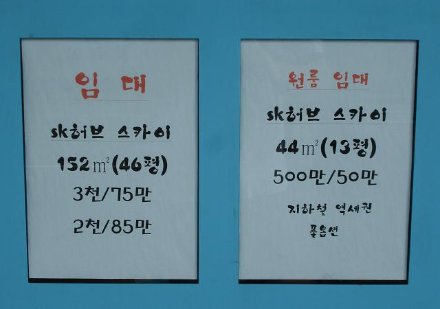
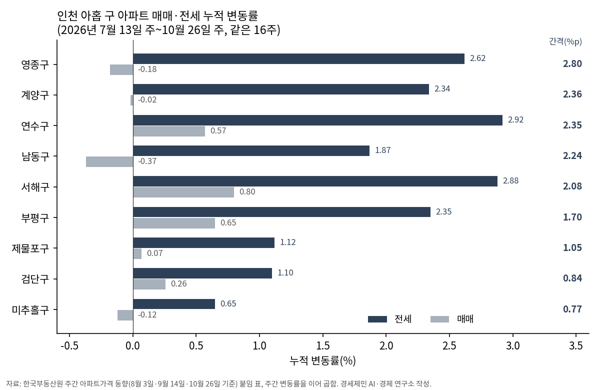
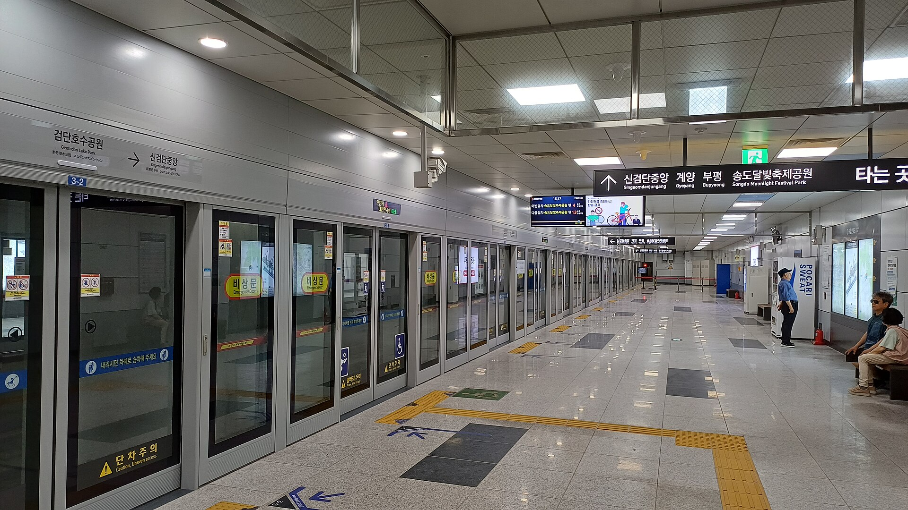
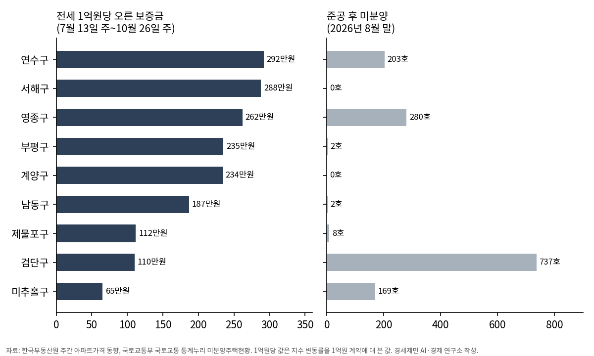
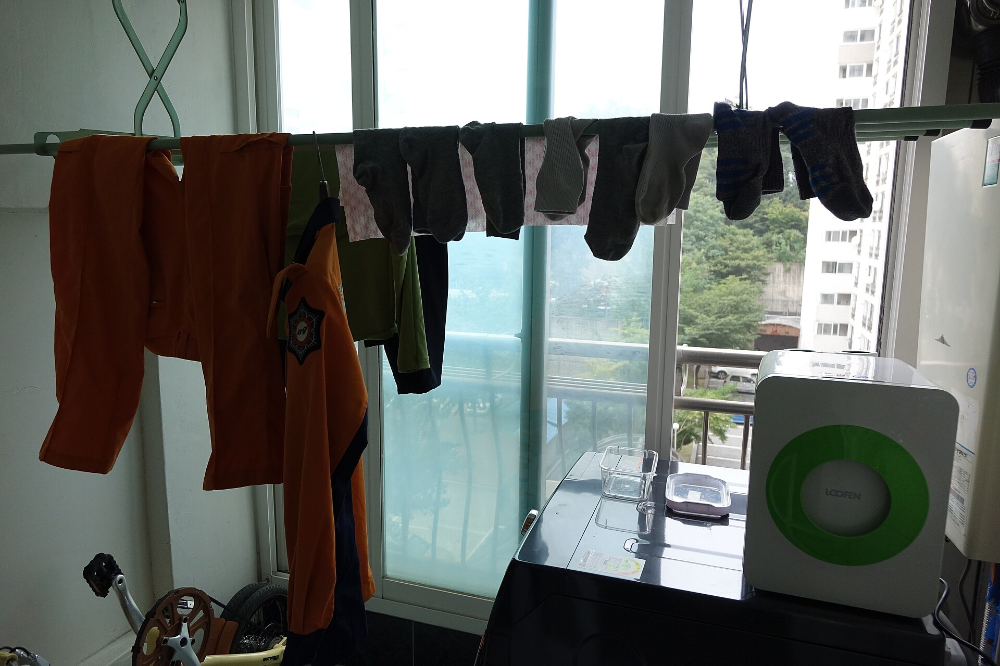

[도시계획·부동산] 인천 아홉 구를 같은 16주로 다시 셌다, 세입자 부담은 영종·계양·연수가 컸다
부동산원 표는 다섯 구는 1월부터, 네 구는 7월부터 센다
영종구 전셋값 16주 내리 올라 2.62%, 매매는 -0.18%
빈 새 집 737호 검단은 전세 1.10%, 280호 영종은 2.62%
AI경제저널=김갑봉 기자 | 10월 29일 한국부동산원이 10월 넷째 주 아파트값을 냈다. 올해 인천 아파트 매매가격은 0.76%, 전세가격은 4.60% 올랐다.
집을 가진 사람과 빌려 사는 사람이 받아 든 숫자가 다르다. 경세제민 AI·경제 연구소는 이 차이를 인천 아홉 구로 쪼개 같은 기간으로 다시 셌다.
인천은 집값보다 전셋값이 올랐다
올해 1월부터 10월 26일까지 전세 누적 변동률에서 매매 누적 변동률을 빼면 인천은 3.84%포인트다. 전국은 1.10%포인트, 서울은 0.18%포인트, 경기는 0.13%포인트다.
인천 전세 4.60%는 서울 8.91%, 경기 6.36%보다 낮다. 서울은 8%대, 경기는 6%대에서 매매와 전세가 함께 움직인다. 그러나 매매와 벌어진 폭은 수도권에서 인천이 가장 크고, 전국의 3.5배다.
전해정(2017)은 2008년 9월부터 2016년 9월까지 서울·인천·경기 아파트 지수를 패널 연립방정식으로 분석했다. 전세가격이 1% 오르면 매매가격은 1.309%, 매매가격이 1% 오르면 전세가격은 0.345% 오른다고 추정했다.
올해 인천 숫자는 그 그림과 다르다.
이 글은 왜 다른지 답하지 않는다. 그 차이가 어느 동네 세입자에게 얼마나 떨어졌는지를 센다.

한국개발연구원 문윤상(2024)은 임대차 계약에서 전세 비중을 약 45%로 봤다. 전월세전환율은 시중금리보다 높은 5~6%로 봤다. 보증금 일부를 월세로 돌리면 돌린 금액에 그 비율을 곱한 만큼을 한 해 월세로 낸다.
부동산원 표대로면 남동구가 가장 크다
부동산원 주간 보고서 붙임 표는 구마다 올해 누적 변동률인 「’26년 누계」를 싣는다. 10월 26일 기준 표로 간격을 내면 남동구가 4.67%포인트로 가장 크다.
남동구 매매는 표에서 -0.43%로 아홉 구 가운데 가장 낮다. 전세는 4.24% 올랐다.
연수구 4.25%포인트, 계양구 4.20%포인트가 뒤를 잇는다. 연수구 전세는 올해 7.09%, 매매는 2.84% 올랐다. 미추홀구는 매매 0.44%, 전세 2.50%로 간격이 2.06%포인트다. 검단구는 0.80%포인트, 제물포구는 1.03%포인트다.
그런데 이 표는 두 기간을 섞어 둔다.
인천은 7월 1일 행정구역을 바꿔 제물포·영종·서해·검단구를 새로 냈다. 부동산원은 표 아래에 「’26년 누계는 ’26.7.1주부터 누계된 변동률」이라고 적었다.
미추홀·연수·남동·부평·계양 다섯 구는 1월부터, 새 네 구는 7월부터 센 값이 한 표에 나란히 있다. 새 네 구에는 1~6월 값이 없다.
남동구의 4.67%포인트는 열 달 치이고, 영종구의 2.77%포인트는 넉 달 치다.
같은 16주로 다시 셌다
연구소는 부동산원 주간 보고서 셋의 붙임 표에서 아홉 구의 주간 변동률을 옮겨 적었다. 8월 3일, 9월 14일, 10월 26일 기준 보고서다. 7월 13일 주부터 10월 26일 주까지 16주다.
주간 변동률을 차례로 이어 곱해 누적 변동률을 냈다. 새 네 구는 이렇게 낸 값이 부동산원 표의 누계와 0.02%포인트 안에서 맞는다.

같은 16주로 맞추자 차례가 바뀐다. 간격이 가장 큰 곳은 영종구 2.80%포인트다. 매매는 -0.18%, 전세는 2.62%다.
계양구 2.36%포인트, 연수구 2.35%포인트, 남동구 2.24%포인트, 서해구 2.08%포인트가 뒤를 잇는다. 부평구 1.70%포인트, 제물포구 1.05%포인트, 검단구 0.84%포인트, 미추홀구 0.77%포인트다.
영종·미추홀·연수·부평·계양·서해 여섯 구는 16주 동안 전셋값이 한 주도 내리지 않았다.
전세 지수가 오른 만큼을 1억원짜리 전세에 대 보면 연수구 292만원, 서해구 288만원, 영종구 262만원이다. 미추홀구는 65만원이다. 계약 하나의 실제 인상액이 아니라 지수의 변화를 1억원에 옮긴 값이다.
연수구에서 2억원짜리 전세라면 16주 동안 지수로 584만원어치가 올랐다. 주택임대차보호법은 계약을 갱신할 때 보증금을 「20분의 1」 안에서만 올리게 한다. 2억원이면 1000만원이다.
새로 맺는 계약에는 이 상한이 걸리지 않는다.
빈 새 집과 오르는 전세
공급이 많으면 전세가 덜 오를까. 국토교통부 통계누리의 8월 말 인천 미분양은 3729호다. 그 가운데 1401호가 다 짓고도 팔리지 않은 준공 후 미분양이다.
검단구는 미분양 737호가 모두 준공 후 미분양이다. 검단구 전셋값은 16주 동안 1.10% 올랐다. 아홉 구 가운데 여덟째다. 매매는 0.26% 올랐다.

영종구는 미분양이 1578호로 인천에서 가장 많다. 그 가운데 280호가 준공 후 미분양이다. 영종구 전셋값은 2.62% 올라 셋째로 많이 올랐다.
준공 후 미분양이 한 호도 없는 서해구와 계양구는 전세가 2.88%, 2.34% 올랐다. 16주 동안 매매는 서해구가 0.80%로 아홉 구 가운데 가장 많이 올랐다.

빈 새 집이 많은 두 구가 서로 반대쪽에 있다. 아홉 개의 점으로는 공급과 전셋값의 관계를 가릴 수 없다. 연구소는 두 줄을 나란히 놓는 데서 멈춘다.
주택 전체로 넓힌 9월 월간 통계도 같은 자리를 가리킨다. 한국부동산원과 인천시에 따르면 9월 전세는 서해구 1.05%, 연수구 0.94%, 영종구 0.69% 올랐다. 월세는 서해구 1.03%, 남동구 0.84%가 컸다.
세입자의 숫자를 계획의 숫자로
인천시는 10월 21일 「인천 도시공간 혁신 비전」을 냈다. 노후계획도시 6개 구역 1만6267호를 패스트트랙으로 정비한다. 해마다 1만 가구 안팎의 새 대상지도 고른다.
같은 발표에 「인천형 주거사다리」, 청년 역세권 매입임대, 협동조합형 아파트 「이음주택」이 들어 있다. 몇 호를 언제 어느 구에 짓는지는 발표문에 없다.

10월 19일 고시된 미추홀구 주안8동 재개발 정비계획은 주변 정비구역의 진행 단계를 표로 적었다. 관리처분인가 단계인 도화1·도화4·학익2·학익3·학익4구역의 현황 세대는 모두 3165세대다.
도시 및 주거환경정비법은 관리처분계획인가가 고시되면 세입자를 포함한 권리자가 종전 건축물을 쓸 수 없게 한다.
주안8동 정비계획은 세입자 주거대책으로 전체 세대의 5%를 공공임대주택으로 짓고 주거이전비를 준다고 적었다. 미추홀구 전셋값은 16주 동안 0.65% 올라 아홉 구 가운데 가장 덜 올랐다.
인천시 발표문과 주안8동 정비계획에는 지을 집의 수와 임대주택 비율이 있다. 세입자 보증금이 얼마 오르는지는 없다. 연구소는 아홉 구의 전세-매매 간격과 1억원당 오른 보증금을 같은 16주 단위로 다음 회차부터 쌓아 인천 세입자 부담의 시계열을 만든다.
참고문헌
- 전해정, 「주택 매매, 전세가격 간의 영향력에 관한 연구 — 패널 연립방정식을 이용하여」, 『부동산학보』 제71집, 한국부동산학회, 2017년 12월, 232-243쪽, http://www.reacademy.org/rboard/data/krea2_new/71_17.pdf
- 한국부동산원, 「전국주택가격동향조사: 2026년 10월 4주 주간 아파트가격 동향」(10월 26일 기준), 2026년 10월 29일, 보도자료 게시판 nttSn 118012, https://www.reb.or.kr/reb/na/ntt/selectNttInfo.do?mi=9565&bbsId=1154&nttSn=118012
- 한국부동산원, 「주간아파트가격동향(20260914기준)」, 2026년 9월 17일, nttSn 117065, https://www.reb.or.kr/reb/na/ntt/selectNttInfo.do?mi=9565&bbsId=1154&nttSn=117065
- 한국부동산원, 「주간아파트가격동향(20260803기준)」, 2026년 8월 6일, nttSn 116001, https://www.reb.or.kr/reb/na/ntt/selectNttInfo.do?mi=9565&bbsId=1154&nttSn=116001
- 한국부동산원, 「26.9월 전국주택가격동향」, 2026년 10월 15일, nttSn 117837, https://www.reb.or.kr/reb/na/ntt/selectNttInfo.do?mi=9565&bbsId=1154&nttSn=117837
- 문윤상, 「전환기의 주택 임대차시장: 주택임대업의 성장과 명암」, 『나라경제』 2024년 4월호(한국개발연구원 누리집 2025년 1월 31일 게재), https://www.kdi.re.kr/share/pressContriView?bd_no=51377
- 국토교통부, 국토교통 통계누리 「미분양주택현황보고」 시·군·구별 미분양현황·공사완료후 미분양현황(2026년 8월), https://stat.molit.go.kr/portal/cate/statView.do?hRsId=32&hFormId=2082
- 「주택임대차보호법」 제6조의3 제3항·제7조 제2항(법률 제21065호, 2026년 1월 2일 시행), 국가법령정보센터, https://www.law.go.kr/법령/주택임대차보호법
- 「도시 및 주거환경정비법」 제81조(법률 제21447호, 2026년 7월 1일 시행), 국가법령정보센터, https://www.law.go.kr/법령/도시및주거환경정비법/제81조
- 인천광역시, 고시 제2026-289호 「주안8동구역 재개발사업 정비계획 결정 및 정비구역 지정과 지형도면 고시」, 2026년 10월 19일, https://announce.incheon.go.kr
- 인천광역시 제물포혁신과, 「「인천 도시공간 혁신 비전」 발표… “거쳐 가는 도시에서 머무는 도시로”」, 2026년 10월 21일, https://www.incheon.go.kr/IC010205/view?repSeq=DOM_0000000015798390
- 인천광역시 도시철도건설본부, 「인천1호선 검단연장선 건설현장(2025.2.)」, 2025년 4월 21일, https://www.incheon.go.kr/iurail/IU020301/3008014
- 인천광역시 토지정보과, 「인천시, 9월 주택 매매가 2개월 연속 하락… 전·월세는 상승세 지속」, 2026년 10월 22일, https://www.incheon.go.kr/IC010205/view?repSeq=DOM_0000000015803470
- 경인일보, 「검단 13만명 ‘역세권 활기’ 누린다」, 2025년 6월, https://www.kyeongin.com/article/1744624
[사진 출처]
- [사진 1] 위키미디어 공용 「Apartment listing-Korea.jpg」(Remi Cormier, CC0), https://commons.wikimedia.org/wiki/File:Apartment_listing-Korea.jpg
- [사진 2] 위키미디어 공용 「20250702 검단호수공원역 승강장.jpg」(Striker9498, CC0), https://commons.wikimedia.org/wiki/File:20250702_검단호수공원역_승강장.jpg
- [사진 3] 위키미디어 공용 「2015-10-03 아파트 빨래건조 DSC03129.jpg」(최광모, CC0), https://commons.wikimedia.org/wiki/File:2015-10-03_아파트_빨래건조_DSC03129.jpg
※ 이 기사는 AI 프로그램 클로드를 활용해 작성했습니다.
관련기사
- [도시계획·부동산] 인천 재개발 14곳 원문을 열었다, 9곳이 에너지 성능으로 용적률을 샀다
- [주택공급 브리핑①] 수도권 착공 목표 26만8000호, 정부 전망도 최대 5만호 미달
- 구월지구 B1구역, 인천에서 가장 높은 용적률 430% 받았다
- 노후계획도시 선도지구, 분담금은 용적률 두 구간에서 갈린다
저작권자 © AI경제저널 무단전재 및 재배포, AI학습 및 활용 금지